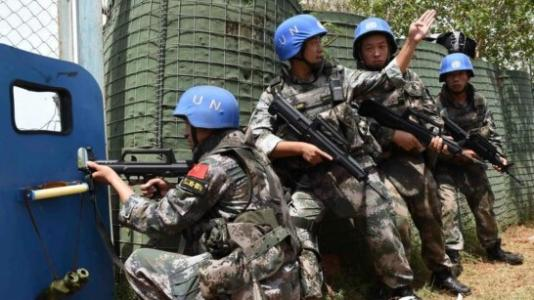

联合国维持和平部队的作用是阻止局部冲突扩大化，或防止冲突再起，并帮助在战争中受害的平民百姓，为最终政治解决冲突创造条件。 在1956年建立第一支联合国维和部队时，联合国秘书长哈马舍尔德曾经提出了著名的维和三原则：
第一，维和行动不得妨碍有关当事国之权利、要求和立场，需保持中立，不得偏袒冲突中的任何一方；
第二，维和行动必须征得有关各方的一致同意才能实施；
第三，维和部队只携带轻武器，只有自卫时方可使用武力。
人们把这三项原则概括为中立的原则、同意的原则和自卫的原则，并称之为哈马舍尔德三原则。 哈马舍尔德三原则是联合国传统维和行动的基本准则。80年代末期以前的维和行动，都是以哈马舍尔德三原则为基本依据的。哈马舍尔德三原则对联合国近四十年的维和行动具有重要的指导意义。
一、是非强制性。它的进驻与活动，需由安理会或大会决定，并征得有关各方同意（其中15个联合国成员国中，最少有9个国家赞成，而且中、美、英、俄、法5个常任理事国没有投反对票），然后授权联合国秘书长组织；进驻后，一旦该国政府提出撤军要求，必须立即撤出。
二、它具有鲜明的中立性，其成员必须来自与冲突双方无直接利害关系的国家。它不同于一支真正的军队，它没有战场，没有敌人，是一支政治外交部队。联合国维持和平部队在执行任务时，除进行自卫外，不得擅自使用武力。必须严守中立，不得卷入冲突任何一方，更不能干涉所在国内政。
联合国维持和平部队的总司令是联合国秘书长。部队的人员由联合国成员国自愿提供。维持和平部队是由武装部队的分遣队组成，士兵可以配备轻型防御性武器，因该支军队必须统一着蓝色盔帽或蓝色贝雷帽，所以亦称“蓝盔”部队（蓝色象征和平）。